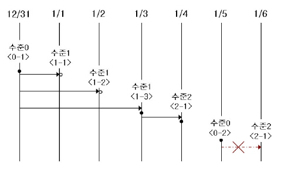

backupdb
데이터베이스 백업은 CUBRID 데이터베이스 볼륨, 제어 파일, 로그 파일을 저장하는 작업으로 cubrid backupdb 유틸리티 또는 CUBRID 매니저를 이용하여 수행된다. DBA 는 저장 매체의 오류 또는 파일 오류 등의 장애에 대비하여 데이터베이스를 정상적으로 복구할 수 있도록 주기적으로 데이터베이스를 백업해야 한다. 이 때 복구 환경은 백업 환경과 동일한 운영체제 및 동일한 버전의 CUBRID가 설치된 환경이어야 한다. 이러한 이유로 데이터베이스를 새로운 버전으로 마이그레이션한 후에는 즉시 새로운 버전의 환경에서 백업을 수행해야 한다. 다만, CUBRID에서 사용하는 LOB(Large Object) 데이터는 데이터베이스 볼륨과 별도의 파일로 관리되므로, backupdb 유틸리티에 의해 자동으로 백업되지 않는다. 따라서 DBA는 데이터베이스 백업 시 LOB 파일이 저장된 디렉터리를 별도로 백업하여야 하며, 복구 시에도 데이터베이스 복구와 함께 해당 LOB 파일을 원래 위치에 복원해야 한다.
cubrid backupdb 유틸리티는 모든 데이터베이스 페이지들, 제어 파일들, 데이터베이스를 백업 시와 일치된 상태로 복구하기 위해 필요한 로그 레코드들을 복사한다.
cubrid backupdb [options] database_name[@hostname]
@hostname: 독립(Standalone) 모드 DB를 백업하는 경우 생략되며, HA 환경에서 백업하는 경우 데이터베이스 이름 뒤에 “@hostname”을 지정한다. hostname은 $CUBRID_DATABASES/databases.txt에 지정된 이름이다. 로컬 서버를 설정하려면 “@localhost”를 지정하면 된다.
다음은 cubrid backupdb 유틸리티와 결합할 수 있는 옵션이다. 대소문자가 구분됨을 주의한다.
-D, --destination-path=<백업> 볼륨이 저장될 디렉터리 경로
-r, --remove-archive 불필요한 로그 파일을 지움
-l, --level=LEVEL 백업 수준
-o, --output-file=<파일> 자세한 백업 메시지를 파일에 출력합니다.
-S, --SA-mode 독립 모드 실행
-C, --CS-mode 클라이언트 서버 모드 실행
--no-check 데이터베이스의 정합성 확인 작업을 수행하지 않습니다
-t, --thread-count=COUNT 백업을 수행하는 스레드 개수
--no-compress 백업 볼륨을 압축하지 않습니다
--sleep-msecs=N 매 1M 읽기 마다 N 밀리초를 쉽니다
-k, --separate-keys TDE에 사용되는 Key File (_keys)을 백업볼륨에 포함하지 않고 별개의 파일로 분리합니다.
- -D, --destination-path=PATH
지정된 디렉터리에 백업 파일이 저장되도록 하며, 현재 존재하는 디렉터리가 지정되어야 한다. 그렇지 않으면 지정한 이름의 백업 파일이 생성된다. -D 옵션이 지정되지 않으면 백업 파일은 해당 데이터베이스의 위치 정보를 저장하는 파일인 databases.txt 에 명시된 로그 디렉터리에 생성된다.
cubrid backupdb -D /home/cubrid/backup demodb-D 옵션을 이용하여 현재 디렉터리에 백업 파일이 저장되도록 한다. -D 옵션의 인수로 “.”을 입력하면 현재 디렉터리가 지정된다.
cubrid backupdb -D . demodb
- -r, --remove-archive
활성 로그(active log)가 꽉 차면 활성 로그를 새로운 보관 로그 파일에 기록한다. 이때 백업을 수행하여 백업 볼륨이 생성되면, 백업 시점보다 앞의 보관 로그는 추후 복구 작업에 불필요하다. -r 옵션은 백업을 수행한 후에, 추후 복구 작업에 더 이상 사용되지 않을 보관 로그 파일을 제거하는 옵션이다. -r 옵션은 백업 시점 이전의 불필요한 보관 로그만 제거하므로 복구 작업에는 영향을 끼치지 않지만, 관리자가 백업 시점 이후의 보관 로그까지 제거하는 경우 전체 복구가 불가능할 수도 있다. 따라서 보관 로그를 제거할 때에는 추후 복구 작업에 필요한 것인지 반드시 검토해야 한다.
-r 옵션을 사용하여 증분 백업(백업 수준 1 또는 2)을 수행하는 경우, 추후 데이터베이스의 정상 복구가 불가능할 수도 있으므로 -r 옵션은 전체 백업 수행 시에만 사용하는 것을 권장한다.
cubrid backupdb -r demodb
- -l, --level=LEVEL
지정된 백업 수준으로 증분 백업을 수행한다. -l 옵션이 지정되지 않으면 전체 백업이 수행된다. 백업 수준에 대한 자세한 내용은 증분 백업 을 참조한다.
cubrid backupdb -l 1 demodb
- -o, --output-file=FILE
대상 데이터베이스의 백업에 관한 진행 정보를 info_backup이라는 파일에 기록한다.
cubrid backupdb -o info_backup demodb다음은 info_backup 파일 내용의 예시로서, 스레드 개수, 압축 방법, 백업 시작 시간, 영구 볼륨의 개수, 백업 진행 정보, 백업 완료 시간 등의 정보를 확인할 수 있다.
[ Database(demodb) Full Backup start ] - num-threads: 1 - compression method: NONE - backup start time: Mon Jul 21 16:51:51 2008 - number of permanent volumes: 1 - backup progress status ----------------------------------------------------------------------------- volume name | # of pages | backup progress status | done ----------------------------------------------------------------------------- demodb_keys | 1 | ######################### | done demodb_vinf | 1 | ######################### | done demodb | 25000 | ######################### | done demodb_lginf | 1 | ######################### | done demodb_lgat | 25000 | ######################### | done ----------------------------------------------------------------------------- # backup end time: Mon Jul 21 16:51:53 2008 [Database(demodb) Full Backup end]
- -S, --SA-mode
독립 모드, 즉 오프라인으로 백업을 수행한다. -S 옵션이 생략되면 클라이언트/서버 모드에서 백업이 수행된다.
cubrid backupdb -S demodb
- -C, --CS-mode
클라이언트/서버 모드에서 백업을 수행하며, demodb를 온라인 백업한다. -C 옵션이 생략되면 클라이언트/서버 모드에서 백업이 수행된다.
cubrid backupdb -C demodb
- -t, --thread-count=COUNT
관리자가 임의로 스레드의 개수를 지정함으로써 병렬 백업을 수행한다. -t 옵션의 인수를 지정하지 않더라도 시스템의 CPU 개수만큼 스레드를 자동 부여하여 병렬 백업을 수행한다.
cubrid backupdb -t 4 demodb
- --no-compress
기본적으로 큐브리드는 백업 볼륨의 크기를 줄이기 위해서, 대상 데이터베이스를 압축한 뒤 저장한다. 백업 파일 압축 실행 시 발생하는 CPU 사용량을 없애고 싶다면, --no-compress 옵션을 통해 백업 볼륨을 압축하지 않을 수 있다.
cubrid backupdb --no-compress demodb
- --sleep-msecs=NUMBER
대상 데이터베이스를 백업하는 도중 쉬는 시간을 설정한다. 단위는 밀리초이며, 기본값은 0 이다. 1MB의 파일을 읽을 때마다 설정한 시간만큼 쉰다. 백업 작업이 과도한 디스크 I/O를 유발하기 때문에, 운영 중인 서비스에 백업 작업으로 인한 영향을 줄이고자 할 때 이 옵션이 사용된다.
cubrid backupdb --sleep-msecs=5 demodb
- -k, --separate-keys
백업 볼륨에 키 파일을 포함하지 않는다. 포함되지 않은 키는 <database_name>_bk<backup_level>_keys 라는 이름을 가진 별도의 파일로 분리된다. 옵션을 주지 않을 경우 기본적으로 키 파일은 백업 볼륨에 포함된다. 키 파일 분리에 대한 자세한 설명은 백업 볼륨 암호화 을 참고한다.
cubrid backupdb -k demodb참고
키 파일은 DB 내부에 저장되어 있는 TDE의 master key를 암/복호화하기 위한 보조 키를 관리하는 파일로 TDE 기능을 사용할 경우 백업시 배업 볼륨에 함께 백업하거나 동일한 저장 매체에 보관하지 말고, 별도의 안전한 방법으로 분리하여 관리를 권장한다. 키 파일이 유실되거나 노출될 경우 TDE 기능 사용한 데이터를 사용할 수 없거나 보안 사고로 이어질 수 있으므로 보관 정책을 명확히 수립하는 것을 권장한다.
백업 정책 및 방식
백업을 진행할 때 고려해야 할 사항은 다음과 같다.
백업할 대상 데이터 선별
보존 가치가 있는 유효한 데이터인지 판단한다.
데이터베이스 전체를 백업할 것인지, 일부만 백업할 것인지 결정한다.
데이터베이스와 함께 백업해야 할 다른 파일이 있는지 확인한다.
백업 방식 결정
증분 백업, 온라인 백업 방식을 결정한다. 부가적으로 압축 백업, 병렬 백업 모드 사용 여부를 결정한다.
사용 가능한 백업 도구 및 백업 장비를 준비한다.
백업 시기 판단
데이터베이스 사용이 가장 적은 시간을 파악한다.
보관 로그의 양을 파악한다.
백업할 데이터베이스를 이용하는 클라이언트 수를 파악한다.
온라인 백업
온라인 백업(또는 핫 백업)은 운영 중인 데이터베이스에 대해 백업을 수행하는 방식으로, 특정 시점의 데이터베이스 이미지의 스냅샷을 제공한다. 운영 중인 데이터베이스를 대상으로 백업을 수행하기 때문에 커밋되지 않은 데이터가 저장될 우려가 있고, 다른 데이터베이스 운영에도 영향을 줄 수 있다.
온라인 백업을 하려면 cubrid backupdb -C 명령어를 사용한다.
오프라인 백업
오프라인 백업(또는 콜드 백업)은 정지 상태인 데이터베이스에 대해 백업을 수행하는 방식으로 특정 시점의 데이터베이스 이미지의 스냅샷을 제공한다.
오프라인 백업을 하려면 cubrid backupdb -S 명령어를 사용한다.
증분 백업
증분 백업(incremental backup)은 전체 백업에 종속적으로 수행되는 백업으로 먼저 수행된 백업 이후의 변경된 사항만을 선택적으로 백업하는 방식이다. 이는 전체 백업보다 백업 볼륨이 적고, 백업 소요 시간이 짧다는 장점이 있다. CUBRID는 0, 1, 2의 백업 수준을 제공하며, 낮은 백업 수준으로 백업을 수행한 이후에만 순차적으로 다음 수준의 백업을 수행할 수 있다.
증분 백업을 하려면 cubrid backupdb -l LEVEL 명령어를 사용한다.
다음은 증분 백업에 관한 예시로서, 이를 참조하여 백업 수준에 관해 상세하게 살펴보기로 한다.

전체 백업(백업 수준 0): 백업 수준 0은 모든 데이터베이스 페이지를 포함하는 전체 백업이다.
데이터베이스에 최초 시도되는 백업 수준은 당연히 수준 0이 된다. DBA 는 복구 상황을 대비하여 정기적으로 전체 백업을 수행해야 하며, 예시에서는 12월 31일과 1월 5일에 전체 백업을 수행하였다.
1차 증분 백업(백업 수준 1): 백업 수준 1은 수준 0의 전체 백업 이후의 변경 사항만 저장하는 증분 백업으로서, 이를 “1차 증분 백업”이라 한다.
주의할 점은 예시의 <1-1>, <1-2>, <1-3>과 같이 1차 증분 백업이 연속적으로 시도되더라도 언제나 수준 0의 전체 백업을 기본으로 증분 백업을 수행한다는 점이다.
만약, 동일 디렉터리에서 백업 파일이 생성된다고 할 때, 1월 1일에 이미 1차 증분 백업 <1-1>이 수행되고, 1월 2일에 또다시 1차 증분 백업 <1-2>가 시도되면, <1-1>에서 생성된 증분 백업 파일을 덮어쓰게 된다. 1월 3일에 1차 증분 백업이 다시 수행되었으므로, 최종 증분 파일은 이 때 생성된다.
그러나, 1월 1일이나 1월 2일의 상태로 데이터베이스를 복구해야 하는 상황이 발생될 수 있으므로, DBA 는 최종 증분 파일로 덮어쓰기 전에 <1-1>과 <1-2> 각각의 증분 백업 파일을 저장 매체에 별도로 보관하는 것이 좋다.
2차 증분 백업(백업 수준 2): 백업 수준 2는 1차 증분 백업 이후의 변경 사항만 저장하는 증분 백업으로 이를 “2차 증분 백업”이라 한다.
1차 증분 백업이 선행되어야만 2차 증분 백업을 수행할 수 있으므로, 1월 4일에 시도한 2차 증분 백업 시도는 성공할 것이고, 1월 6일에 시도한 2차 증분 백업 시도는 당연히 허용되지 않을 것이다.
이러한 백업 수준 0, 1, 2로 생성된 백업 파일들은 모두 데이터베이스를 복구할 때 필요하므로, 2차 증분 백업이 완료된 1월 4일의 상태로 데이터베이스를 복구하기 위해서는 <2-1>에서 생성된 2차 증분 백업 파일, <1-3>에서 생성된 1차 증분 백업 파일, <0-1>에서 생성된 전체 백업 파일이 모두 필요하다. 즉, 완전한 복구를 위해서는 직전에 생성된 증분 백업 파일보다 앞서서 최종으로 생성된 전체 백업 파일이 요구된다.
압축 백업 모드
압축 백업(compress backup)은 데이터베이스를 압축하여 백업을 수행하기 때문에 백업 볼륨의 크기가 줄어들어 디스크 I/O 비용을 감소시킬 수 있고, 디스크 공간을 절약할 수 있다.
큐브리드 11.2버전부터는 압축 백업 모드가 기본값으로 설정되어 있다.
병렬 백업 모드
병렬 백업 또는 다중 백업(multi-thread backup)은 지정된 스레드 개수만큼 동시 백업을 수행하기 때문에 백업 시간을 크게 단축시켜 준다. 기본적으로 시스템의 CPU 수만큼 스레드를 부여하게 된다.
병렬 백업을 하려면 cubrid backupdb -t | --thread-count 명령어를 사용한다.
백업 파일 관리
백업 대상 데이터베이스의 크기에 따라 하나 이상의 백업 파일이 연속적으로 생성될 수 있으며, 각각의 백업 파일의 확장자에는 생성 순서에 따라 000, 001~0xx와 같은 유닛 번호가 순차적으로 부여된다.
백업 작업 중 디스크 용량 관리
백업 작업 도중, 백업 파일이 저장되는 디스크 용량에 여유가 없는 경우 백업 작업을 진행할 수 없다는 안내 메시지가 화면에 나타난다. 안내 메시지에는 백업 대상이 되는 데이터베이스의 이름과 경로명, 백업 파일명, 백업 파일의 유닛 번호, 백업 수준이 표시된다. 백업 작업을 계속 진행하려는 관리자는 다음과 같이 옵션을 선택할 수 있다.
옵션 0: 백업 작업을 더 이상 진행하지 않을 경우, 0을 입력한다.
옵션 1: 백업 작업을 진행하기 위해 관리자는 현재 장치에 새로운 디스크를 삽입한 후 1을 입력한다.
옵션 2: 백업 작업을 진행하기 위해 관리자는 장치를 변경하거나 백업 파일이 저장되는 디렉터리 경로를 변경한 후 2를 입력한다.
******************************************************************
Backup destination is full, a new destination is required to continue:
Database Name: /local1/testing/demodb
Volume Name: /dev/rst1
Unit Num: 1
Backup Level: 0 (FULL LEVEL)
Enter one of the following options:
Type
- 0 to quit.
- 1 to continue after the volume is mounted/loaded. (retry)
- 2 to continue after changing the volume's directory or device.
******************************************************************
보관 로그 관리
운영체제의 파일 삭제 명령(rm, del)을 사용하여 보관 로그(archive log)를 임의로 삭제해서는 안 되며, 시스템의 설정, cubrid backupdb 유틸리티 또는 서버 프로세스에 의해 보관 로그가 삭제되어야 한다. 보관 로그가 삭제될 수 있는 경우는 다음의 3가지이다.
HA 환경이 아닌 경우(ha_mode=off)
force_remove_log_archives 를 yes(기본값)로 설정하면, 최대 log_max_archives 개수만큼만 보관 로그가 유지되고 나머지는 자동으로 삭제된다. 단, 가장 오래된 보관 로그 파일에 액티브한 트랜잭션이 있다면 이 트랜잭션이 종료될 때까지 해당 로그 파일이 삭제되지 않는다.
HA 환경인 경우(ha_mode=on)
force_remove_log_archives를 no로 설정하고, log_max_archives 개수를 지정하면 복제 반영 후 자동으로 삭제된다.
참고
ha_mode=on일 때 force_remove_log_archives를 yes로 설정하면 복제 반영이 안 된 보관 로그가 삭제될 수 있으므로, 이를 권장하지는 않는다. 다만, 복제 재구축을 감수하더라도 마스터 노드의 디스크 여유 공간을 확보하는 것이 우선된다면 force_remove_log_archives를 yes로 설정하고, log_max_archives를 적당한 값으로 설정한다.
cubrid backupdb -r 옵션을 사용하여 명령을 실행하면 삭제된다. 하지만 HA 환경에서는 -r 옵션을 사용하면 안 된다.
즉, 데이터베이스 운영 중에 보관 로그 볼륨을 가급적 남기고 싶지 않다면 cubrid.conf의 log_max_archives 값을 작은 값 또는 0으로 설정하되, force_remove_log_archives의 값은 HA 환경이면 가급적 no로 설정한다.
restoredb
데이터베이스 복구는 동일 버전의 CUBRID 환경에서 수행된 백업 작업에 의해 생성된 백업 파일, 활성 로그 및 보관 로그를 이용하여 특정 시점의 데이터베이스로 복구하는 작업이다. 데이터베이스 복구를 진행하려면 cubrid restoredb 유틸리티 또는 CUBRID 매니저를 사용한다.
cubrid restoredb 유틸리티는 최종 백업을 수행한 이후 모든 활성 로그와 보관 로그의 정보를 이용해 데이터베이스 백업본으로부터 데이터베이스를 복구한다.
cubrid restoredb [options] database_name
어떠한 옵션도 지정되지 않은 경우 기본적으로 마지막 커밋 시점까지 데이터베이스가 복구된다. 만약, 마지막 커밋 시점까지 복구하기 위해 필요한 활성 로그/보관 로그 파일이 없다면 마지막 백업 시점까지만 부분 복구된다.
cubrid restoredb demodb
다음은 cubrid restoredb 유틸리티와 결합할 수 있는 옵션을 정리한 표이다. 대소문자가 구분됨을 주의한다.
-d, --up-to-date=DATE 주어진 시간으로 데이터베이스 상태를 복구
--list 복구를 하지 않고 모든 백업 볼륨을 나열
-B, --backup-file-path=PATH 백업된 볼륨이 존재하는 디렉터리 경로
-l, --level=LEVEL 복구에 사용될 백업의 레벨
-p, --partial-recovery archive 로그가 존재하지 않으면 강제로 partial recovery 수행함
-o, --output-file=FILE 출력 메시지가 저장될 파일
-u, --use-database-location-path 데이터베이스 위치 파일에 설정된 경로에 데이터베이스 볼륨과 로그 볼륨을 복구
-k, --keys-file-path 복구에 사용될 키 파일 (_keys)의 경로
- -d, --up-to-date=DATE
-d 옵션으로 지정된 날짜-시간까지 데이터베이스를 복구한다. 사용자는 dd-mm-yyyy:hh:mi:ss(예: 14-10-2008:14:10:00)의 형식으로 복구 시점을 직접 지정할 수 있다. 만약 지정한 복구 시점까지 복구하기 위해 필요한 활성 로그/보관 로그 파일이 없다면 마지막 백업 시점까지만 부분 복구된다.
cubrid restoredb -d 14-10-2008:14:10:00 demodbbackuptime 이라는 키워드를 복구 시점으로 지정하면 데이터베이스를 마지막 백업이 수행된 시점까지 복구한다.
cubrid restoredb -d backuptime demodb
- --list
대상 데이터베이스의 백업 파일에 관한 정보를 화면에 출력하며 복구는 수행하지 않는다. 이 옵션은 CUBRID 9.3부터 데이터베이스가 운영 중인 경우에도 수행 가능하다.
cubrid restoredb --list demodb다음은 --list 옵션에 의해 출력되는 백업 정보의 예로서, 복구 작업을 수행하기 전에 대상 데이터베이스의 백업 파일이 최초 저장된 경로와 백업 수준을 검증할 수 있다.
*** BACKUP HEADER INFORMATION *** Database Name: /local1/testing/demodb DB Creation Time: Mon Oct 1 17:27:40 2008 Pagesize: 4096 Backup Level: 1 (INCREMENTAL LEVEL 1) Start_lsa: 513|3688 Last_lsa: 513|3688 Backup Time: Mon Oct 1 17:32:50 2008 Backup Unit Num: 0 Release: 8.1.0 Disk Version: 8 Backup Pagesize: 4096 Zip Method: 0 (NONE) Zip Level: 0 (NONE) Previous Backup Level: 0 Time: Mon Oct 1 17:31:40 2008 (start_lsa was -1|-1) Database Volume Name: /local1/testing/demodb_keys Volume Identifier: -6, Size: 65 bytes (1 pages) Database Volume Name: /local1/testing/demodb_vinf Volume Identifier: -5, Size: 308 bytes (1 pages) Database Volume Name: /local1/testing/demodb Volume Identifier: 0, Size: 2048000 bytes (500 pages) Database Volume Name: /local1/testing/demodb_lginf Volume Identifier: -4, Size: 165 bytes (1 pages) Database Volume Name: /local1/testing/demodb_bkvinf Volume Identifier: -3, Size: 132 bytes (1 pages)--list 옵션을 이용하여 출력된 백업 정보를 확인하면, 백업 파일이 백업 수준 1로 생성되었고, 앞의 백업 수준 0의 전체 백업이 수행된 시점을 확인할 수 있다. 따라서, 예시된 데이터베이스의 복구를 위해서는 백업 수준 0인 백업 파일과 백업 수준 1인 백업 파일이 준비되어야 한다.
- -B, --backup-file-path=PATH
백업 파일이 위치하는 디렉터리를 지정할 수 있다. 만약, 이 옵션이 지정되지 않으면 시스템은 데이터베이스 위치 정보 파일인 databases.txt 에 지정된 log-path 디렉터리에서 대상 데이터베이스를 백업했을 때 생성된 백업 정보 파일(dbname _bkvinf)을 검색하고, 백업 정보 파일에 지정된 디렉터리 경로에서 백업 파일을 찾는다. 그러나, 백업 정보 파일이 손상되거나 백업 파일의 위치 정보가 삭제된 경우라면 시스템이 백업 파일을 찾을 수 없으므로, 관리자가 -B 옵션을 이용하여 백업 파일이 위치하는 디렉터리 경로를 직접 지정해야 한다.
cubrid restoredb -B /home/cubrid/backup demodb데이터베이스의 백업 파일이 현재 디렉터리에 있는 경우, 관리자는 -B 옵션을 이용하여 백업 파일이 위치하는 디렉터리를 지정할 수 있다.
cubrid restoredb -B . demodb
- -l, --level=LEVEL
대상 데이터베이스의 백업 수준(0, 1, 2)을 지정하여 복구를 수행한다. 백업 수준에 대한 자세한 내용은 증분 백업 을 참조한다.
cubrid restoredb -l 1 demodb
- -p, --partial-recovery
사용자 응답을 요청하지 않고 부분 복구를 수행하라는 명령이다. 백업 시점 이후에 기록된 활성 로그나 보관 로그가 완전하지 않을 때 기본적으로 시스템은 로그 파일이 필요하다는 것을 알리면서 실행 옵션을 입력하라는 요청 메시지를 출력하는데, -p 옵션을 이용하면 이러한 요청 메시지의 출력 없이 직접 부분 복구를 수행할 수 있다. 따라서, -p 옵션을 이용하여 복구를 수행하면 언제나 마지막 백업 시점까지 데이터가 복구된다.
cubrid restoredb -p demodb-p 옵션이 지정되지 않은 경우, 사용자에게 실행 옵션을 선택하라는 요청 메시지는 다음과 같다.
*********************************************************** Log Archive /home/cubrid/test/log/demodb_lgar002 is needed to continue normal execution. Type - 0 to quit. - 1 to continue without present archive. (Partial recovery) - 2 to continue after the archive is mounted/loaded. - 3 to continue after changing location/name of archive. ***********************************************************옵션 0: 복구 작업을 더 이상 진행하지 않을 경우, 0을 입력한다.
옵션 1: 로그 파일 없이 부분 복구를 진행하려면, 1을 입력한다.
옵션 2: 복구 작업을 진행하기 위해 관리자는 현재 장치에 보관 로그를 위치시킨 후 2를 입력한다.
옵션 3: 복구 작업을 계속하기 위해 관리자는 로그 위치를 변경한 후 3을 입력한다.
- -o, --output-file=FILE
대상 데이터베이스의 복구에 관한 진행 정보를 info_restore라는 파일에 기록하는 명령이다.
cubrid restoredb -o info_restore demodb
- -u, --use-database-location-path
데이터베이스 위치 정보 파일(databases.txt)에 지정된 경로에서 대상 데이터베이스를 복구하는 구문이다. -u 옵션은 A 서버에서 백업을 수행하고 B 서버에서 백업 파일을 복구하고자 할 때 사용할 수 있는 유용한 옵션이다.
cubrid restoredb -u demodb
- -k, --keys-file-path=PATH
대상 데이터베이스 복구 시 필요한 키 파일을 지정한다. 올바른 키 파일이 주어지지 않았을 경우 복구에 실패한다. 옵션을 지정해주지 않을 경우 적절한 키 파일을 탐색하여 사용한다. 이에 대한 자세한 내용은 백업 볼륨 암호화 을 참고한다.
cubrid restoredb -k /home/cubrid/backup_keys/demodb_bk1_keys demodb
데이터베이스 서버 시작이나 백업 볼륨 복구 시 서버 에러 로그 또는 restoredb 에러 로그 파일에 로그 회복(log recovery) 시작 시간과 종료 시간에 대한 NOTIFICATION 메시지를 출력하여, 해당 작업의 소요 시간을 확인할 수 있다. 해당 메시지에는 적용(redo)해야할 로그의 개수와 로그 페이지 개수가 함께 기록된다.
Time: 06/14/13 21:29:04.059 - NOTIFICATION *** file ../../src/transaction/log_recovery.c, line 748 CODE = -1128 Tran = -1, EID = 1
Log recovery is started. The number of log records to be applied: 96916. Log page: 343 ~ 5104.
.....
Time: 06/14/13 21:29:05.170 - NOTIFICATION *** file ../../src/transaction/log_recovery.c, line 843 CODE = -1129 Tran = -1, EID = 4
Log recovery is finished.
복구 정책과 절차
데이터베이스를 복구할 때 고려해야 할 사항은 다음과 같다.
백업 파일 준비
백업 파일 및 로그 파일이 저장된 디렉터리를 파악한다.
증분 백업으로 대상 데이터베이스가 백업된 경우, 각 백업 수준에 따른 백업 파일이 존재하는지를 파악한다.
백업이 수행된 CUBRID 데이터베이스의 버전과 복구가 이루어질 CUBRID 데이터베이스 버전이 동일한지를 파악한다.
복구 방식 결정
부분 복구인지 전체 복구인지를 결정한다.
증분 백업 파일을 이용한 복구인지를 결정한다.
사용 가능한 복구 도구 및 복구 장비를 준비한다.
복구 시점 판단
데이터베이스 서버가 종료된 시점을 파악한다.
장애 발생 전에 이루어진 마지막 백업 시점을 파악한다.
장애 발생 전에 이루어진 마지막 커밋 시점을 파악한다.
데이터베이스 복구 절차
다음은 백업 및 복구 작업의 절차를 시간별로 예시한 것이다.
2008/8/14 04:30분에 운영이 중단된 demodb 를 전체 백업을 수행한다.
2008/8/14 10:00분에 운영 중인 demodb 를 1차 증분 백업 수행한다.
2008/8/14 15:00분에 운영 중인 demodb 를 1차 증분 백업을 수행한다. 2번의 1차 증분 백업 파일을 덮어쓴다.
2008/8/14 15:30분에 시스템 장애가 발생하였고, 관리자는 demodb 의 복구 작업을 준비한다. 장애 발생 전의 마지막 커밋 시점이 15:25분이므로 이를 복구 시점으로 지정한다.
관리자는 1.에서 생성된 전체 백업 파일 및 3.에서 생성된 1차 증분 백업 파일, 활성 로그 및 보관 로그를 준비하여 마지막 커밋 시점인 15:25 시점까지 demodb 를 복구한다.
Time |
Command |
설명 |
|---|---|---|
2008/8/14 04:25 |
cubrid server stop demodb |
demodb 운영을 중단한다. |
2008/8/14 04:30 |
cubrid backupdb -S -D /home/backup -l 0 demodb |
오프라인에서 demodb 를 전체 백업하여 지정된 디렉터리에 백업 파일을 생성한다. |
2008/8/14 05:00 |
cubrid server start demodb |
demodb 운영을 시작한다. |
2008/8/14 10:00 |
cubrid backupdb -C -D /home/backup -l 1 demodb |
온라인에서 demodb 를 1차 증분 백업하여 지정된 디렉터리에 백업 파일을 생성한다. |
2008/8/14 15:00 |
cubrid backupdb -C -D /home/backup -l 1 demodb |
온라인에서 demodb 를 1차 증분 백업하여 지정된 디렉터리에 백업 파일을 생성한다. 10:00에 생성된 1차 증분 백업파일을 덮어쓴다. |
2008/8/14 15:30 |
시스템 장애가 발생한 시각이다. |
|
2008/8/14 15:40 |
cubrid restoredb -l 1 -d 08/14/2008:15:25:00 demodb |
전체 백업 파일, 1차 증분 백업 파일, 활성 로그 및 보관 로그를 기반으로 demodb 를 복구한다. 전체 백업 파일, 1차 증분된 백업 파일, 활성 로그 및 보관 로그에 의해 15:25 시점까지 복구된다. |
다른 서버로의 데이터베이스 복구
다음은 A 서버에서 demodb 를 백업하고, 백업된 파일을 기반으로 B 서버에서 demodb 를 복구하는 방법이다.
백업 환경과 복구 환경
A 서버의 /home/cubrid/db/demodb 디렉터리에서 demodb 를 백업하고, B 서버의 /home/cubrid/data/demodb 디렉터리에 demodb 를 복구하는 것으로 가정한다.

A 서버에서 백업
A 서버에서 demodb 를 백업한다. 이보다 먼저 백업을 수행하였다면 이후 변경된 부분만 증분 백업을 수행할 수 있다. 백업 파일이 생성되는 디렉터리는 -D 옵션에 의해 지정하지 않으면, 기본적으로 로그 볼륨이 저장되는 위치에 생성된다. 다음은 권장되는 옵션을 사용한 백업 명령이며, 옵션에 관한 보다 자세한 내용은 backupdb를 참고한다.
cubrid backupdb -z demodbB 서버에서 데이터베이스 위치 정보 파일 편집
동일한 서버에서 백업 및 복구 작업이 이루어지는 일반적인 시나리오와는 달리, 타 서버 환경에서 백업 파일을 복구하는 시나리오에서는 B 서버의 데이터베이스 위치 정보 파일(databases.txt)에서 데이터베이스를 복구할 위치 정보를 추가해야 한다. 위 그림에서는 B 서버(호스트명은 pmlinux)의 /home/cubrid/data/demodb 디렉터리에 demodb 를 복구하는 것을 가정하였으므로, 이에 따라 데이터베이스 위치 정보 파일을 편집하고, 해당 디렉터리를 B 서버에서 생성한다.
데이터베이스 위치 정보는 한 라인으로 작성하고, 각 항목은 공백으로 구분한다. 한 라인은 [데이터베이스명] [데이터볼륨경로] [호스트명] [로그볼륨경로]의 형식으로 작성한다. 따라서 다음과 같이 demodb 의 위치 정보를 작성한다.
demodb /home/cubrid/data/demodb pmlinux /home/cubrid/data/demodbB 서버로 백업 파일 전송
복구를 위해서는 대상 데이터베이스의 백업 파일이 필수적으로 준비되어야 한다. 따라서, A 서버에서 생성된 백업 파일(예: demodb_bk0v000)을 B 서버에 전송한다. 즉, B 서버의 임의 디렉터리(예: /home/cubrid/temp)에는 백업 파일이 위치해야 한다.
참고
백업 이후에 현재 시점까지 모두 복구하려면 백업 이후의 로그, 즉 활성 로그(예: demodb_lgat)와 보관 로그(예: demodb_lgar000)까지 모두 추가적으로 복사해야 된다. 활성 로그와 보관 로그는 복구될 데이터베이스의 로그 디렉터리, 즉 $CUBRID/databases/databases.txt 파일에서 명시한 로그 파일의 디렉터리(예: $CUBRID/databases/demodb/log)에 위치해야 한다. 하지만 백업 파일의 위치는 -D 옵션으로 명시할 수 있기 때문에 다른 위치에 있어도 된다.
또한, 백업 이후 추가된 로그를 반영하려면 보관 로그 파일이 삭제되기 전에 복사해야 하는데, 보관 로그의 삭제 관련 시스템 파라미터인 log_max_archives의 기본값이 0으로 설정되어 있으므로 백업 이후 보관 로그 파일이 삭제될 수 있다. 이러한 상황을 방지하기 위해, log_max_archives의 값을 적당히 크게 설정하여야 한다. log_max_archives를 참고한다.
B 서버에서 복구
B 서버로 전송한 백업 파일이 있는 디렉터리에서 cubrid restoredb 유틸리티를 호출하여 데이터베이스 복구 작업을 수행한다. -u 옵션에 의해 databases.txt 에 지정된 디렉터리 경로에 demodb 가 복구된다.
cubrid restoredb -u demodb다른 위치에서 cubrid restoredb 유틸리티를 호출하려면, 다음과 같이 -B 옵션을 이용하여 백업 파일이 위치하는 디렉터리 경로를 지정해야 한다.
cubrid restoredb -u -B /home/cubrid/temp demodb